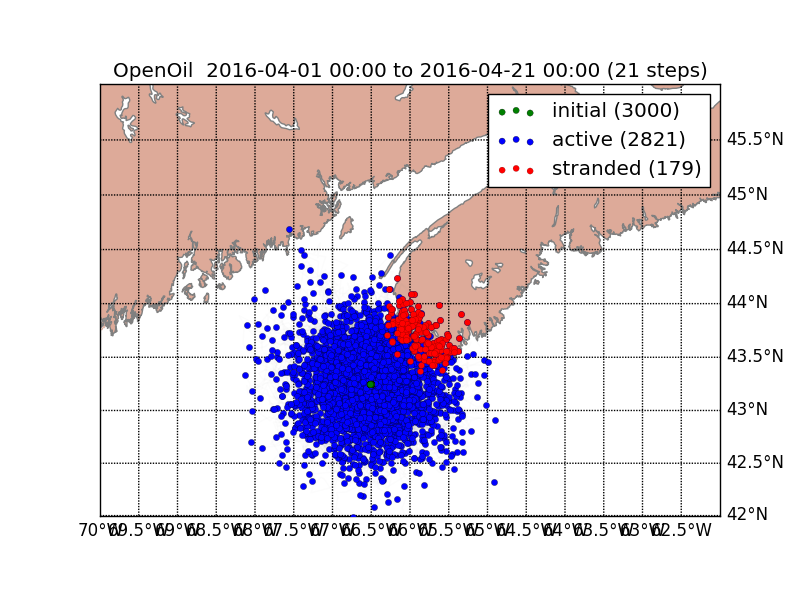

<ion-view view-title="Predict">
  <ion-content class="padding" data-tap-disabled="true">

    <div class="bar bar-header bar-calm">
      <h1 class="title">Predicted Location</h1>
    </div><br><br><br>

    <center>
      <video controls="" height="360" width="480">
        <source src="../img/FundyModel.m4v" type="video/mp4">
        </source>
      </video>
      
    </center>
  </ion-content>
</ion-view>
